AI beyond the chat window.
OpenAI and OpenRouter integrations, multimodal document pipelines and agents connected to real tools.

Inside my AI work — documents, agents and reliable execution
OpenAI & OpenRouter integrations
Integration experience with OpenAI APIs and OpenRouter, combining Python/FastAPI services, typed contracts and structured model outputs.
Multimodal document pipelines
In naMoska_AI, I build image and PDF extraction pipelines for purchase documents: image preparation, multi-page processing, JSON Schema/Pydantic validation and explicit uncertainty flags for human review.
Agents connected to business tools
In naMoska_Agent, I integrate the Hermes runtime with scoped MCP tools for inventory, purchasing and production workflows. Run isolation and tool allowlists keep access bounded; people review and confirm changes in the application.
Evaluation, budgets & observability
Synthetic document tests, structured-output diagnostics, token budgets and per-execution usage tracking — including failed model calls and unknown costs.
From interface to infrastructure.
The tools I use to build web applications, connect systems and work with AI.



Explore the full stack — text version
Languages & runtime
TypeScript · JavaScript · Python · Node.js · Bash · Java · PHP · pip
Frontend & interfaces
React · Vite · Tailwind CSS · TanStack Query · Next.js · React Hook Form · Zod · Chart.js
Backend & AI
NestJS · FastAPI · OpenAI API · OpenRouter · n8n · Express · TypeORM · AI agents · Multimodal AI
Applied AI
Structured outputs · Pydantic · JSON Schema · Vision · PDF extraction · Hermes · MCP · Human review · Token budgets · Evaluation
Data & messaging
PostgreSQL · Redis · BullMQ · RabbitMQ · MinIO · Supabase · SQL · JSONB · MySQL · MongoDB
Linux & infrastructure
Linux · Docker · Docker Compose · Git · Terminal · Docker Swarm · NGINX · Traefik · GitHub Actions
APIs & integrations
REST APIs · Webhooks · SSE · OAuth 2.0 · JWT · WhatsApp API · Google Calendar · Asaas
Built to hold together.
Architecture, data consistency and testing are part of the build.

A closer look at my engineering practices
Architecture that can evolve
Clean Architecture, Hexagonal Architecture and multi-tenant systems with workspace isolation and permission-based access.
Reliable data and background work
Concurrency control, database transactions and asynchronous processing with queues, retries and idempotent operations.
Testing beyond the happy path
Automated unit and integration tests, concurrency scenarios and contract validation between services.
A side of me you can visit.
Visit BrechoDev · View my portfolio
Always learning. Always building.
Pelotas, Brazil · Discord: siefert